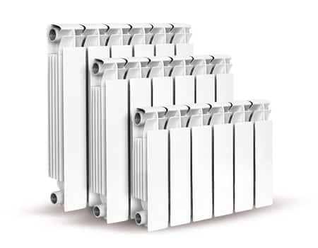

Внутренняя канализация — это комплекс трубопроводов в соединении с приборами сантехники. Основное предназначение внутренней канализации — сбор и отведение сточных вод из здания с максимальным соблюдением гигиены и экологичности.
Наружная канализация это часть системы отвода стоков расположенная снаружи здания. Иными словами, это сеть трубопроводов, очистных сооружений или накопителей, которые начинаются от дома и заканчиваются сбросом очищенной воды в грунт.
Фитинги – это части трубопровода, служащие для соединения или разветвления труб. Так же фитинги используют для того, что бы плавно перейти с одного диаметра трубы на другой (переходные фитинги) или для того что бы разобрать или собрать часть трубопровода. Фитинги бывают резьбовые, сварные, фланцевые и обжимные. На резьбовых фитингах предусмотрена цилиндрическая резьба, которую герметизируют уплотнителем. В качестве уплотнителя используется лен, пропитанный железным суриком (железистой охрой), лента ФУМ или специальная нить. Фитинги являются одним из главных составляющих трубопровода при ремонте помещений (жилых и производственных). Прокладка новых труб в ванной комнате, монтаж полотенцесушителя и соединение труб разного диаметра требует использования фитингов. При проводке систем отопления, канализации и водопроводных, газопроводных сетей необходимы качественные фитинги.
Чугунные резьбовые фитинги – это соединительные элементы трубопроводов, изготовленные из высококачественного ковкого бело-серого ковкого чугуна – лучшего материала для обеспечения надежных и долговечных соединений.
Полимерные трубы — цилиндрическое изделие, изготовленное из полимерного материала, полое внутри, имеющее длину, значительно превосходящую диаметр. Область применения полимерных труб крайне широка. Полимерные трубы применяются для строительства и ремонта трубопроводов, транспортирующих воду для хозяйственного, питьевого холодного и горячего водоснабжения, другие жидкие и газообразные вещества, к которым полимер, из которого они изготовлены, химически стоек. Полимерные трубы используются для подачи/транспортировки горючих газов, в системах отопления, канализации и сетях водоотведения. В последнее время полимерные трубы все чаще используются для гидротранспорта. Полимерные трубы могут использоваться как защитные каналы для прокладки электрических кабелей, кабелей связи, волоконно-оптического кабеля и др. Фитинги для полипропиленовых труб (или фасонные части) производятся при помощи отливания под силой давления. Применяются фитинги для монтирования или при ремонте системы водоснабжения, отопления, канализации. Исключение составляют трубопроводы, которые используются для противопожарного водоснабжения. Полипропиленовые трубы с фитингами используются для подачи технических вод, чья температура колеблется от 5 до 95°С.
Радиатор отопления (неофициальное народное название — батарея, также «излучатель» от лат. radius «луч») — конвективно-радиационный отопительный прибор, состоящий из отдельных, обычно колончатых, элементов — секций — с внутренними каналами, внутри которых циркулирует теплоноситель (обычно — вода)[1]. Тепло от радиатора отводится излучением, конвекцией и теплопроводностью; доля тепла, отводимая излучением, увеличивается при окраске радиатора в тёмный цвет.

Водопрово́д — система непрерывного водоснабжения потребителей, предназначенная для проведения воды для питья и технических целей из одного места (обыкновенно водозаборных сооружений) в другое — к водопользователю (городские и заводские помещения) преимущественно по подземным трубам или каналам; в конечном пункте, часто очищенная от механических примесей в системе фильтров
Фи́тинг (англ. fitting от fit «прилаживать, монтировать, собирать») — соединительная часть трубопровода, устанавливаемого для разветвления, поворотов, переходов на другой диаметр, а также при необходимости частой сборки и разборки труб. Фитинги служат и для герметичного перекрытия трубопровода и прочих вспомогательных целей.
Насос - это специальное устройство, применяемое для перемещения перекачиваемой среды (твердой, жидкой или газообразной). Насосы, компрессоры и вентиляторы, предназначенные для перекачивания жидкости, воздуха или газа, получили за последние два столетия чрезвычайно широкое распространение практически во всех сферах экономики и человеческой деятельности. Современные виды и типы насосов различаются по принципу работы, особенностями конструкции, применению и по ряду прочих характеристик. Они используются для поднятия воды из скважины в автономной системе водоснабжения, откачки канализационных стоков, для перекачки агрессивных и горючих жидкостей на предприятиях химической и нефтегазовой промышленности и во многих других случаях.
Сшитый полиэтилен (или ПЕх (PEx), где х – не буква, а обозначение сшивки) – это полимер с модифицированной структурой молекулярных связей, основой которого является полимеризированный под высоким либо низким давлением этилен. Является наиболее плотным среди других полиэтиленовых материалов и имеет более высокие технические показатели. Используется для изготовления наиболее прочных полимерных изделий, выдерживающих различные нагрузки механического, химического либо геофизического происхождения. Кроме того, многие изделия являются устойчивыми к высоким температурам, что позволяет использовать его в соответствующих условиях.